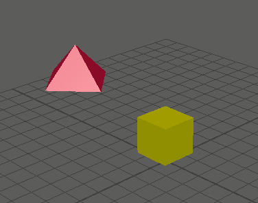

方向约束可用于将一个对象所朝的方向与另外一个或多个对象相匹配。此约束可用于同时确定几个对象的方向。有关方向约束的详细信息，请参见方向约束。
在创建方向约束时，您可以先设定创建选项，然后创建方向约束，或者也可以使用当前创建选项立即创建约束。
创建方向约束
- 选择一个或多个目标对象，然后选择要约束的对象。
- 选择约束 > 方向(Constrain > Orient)。

向动画层添加方向约束
- 选择一个或多个目标对象，后跟要约束的对象。
- 选择约束 > 方向(Constrain > Orient) >
 。
。
- 在“方向约束选项”(Orient Constraint Options)窗口中，设定所需的约束选项。从“动画层”(Animation Layer)下拉菜单中，选择要添加约束的动画层。
提示：
将约束添加到动画层时，请启用“保持偏移”(Maintain Offset)，使受约束对象不会意外移动。
现在，约束动画包含在指定的动画层中，并有助于在场景中生成动画。